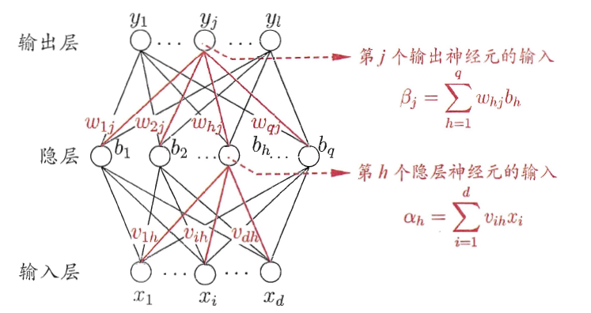
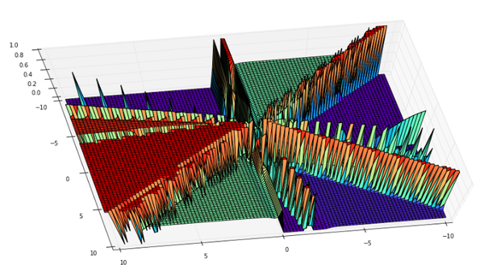

在机器学习和认知科学领域，人工神经网络（
artificial neural network，缩写ANN），简称神经网络（neural network，缩写NN）或类神经网络，是一种模仿生物神经网络(动物的中枢神经系统，特别是大脑)的结构和功能的数学模型或计算模型，用于对函数进行估计或近似。神经网络由大量的人工神经元联结进行计算。
综述
大多数情况下人工神经网络能在外界信息的基础上改变内部结构，是一种自适应系统。现代神经网络是一种非线性统计性数据建模工具。典型的神经网络具有以下三个部分：
结构 （Architecture）结构指定了网络中的变量和它们的拓扑关系。例如，神经网络中的变量可以是神经元连接的权重（weights）和神经元的激活值（activities of the neurons）。激活函数（Activity Rule）大部分神经网络模型具有一个短时间尺度的动力学规则，来定义神经元如何根据其他神经元的活动来改变自己的激励值。一般激励函数依赖于网络中的权重（即该网络的参数）。学习规则（Learning Rule）学习规则指定了网络中的权重如何随着时间推进而调整。这一般被看做是一种长时间尺度的动力学规则。一般情况下，学习规则依赖于神经元的激励值。它也可能依赖于监督者提供的目标值和当前权重的值。
初识神经网络
如上文所说，神经网络主要包括三个部分：结构、激活函数、学习规则。下图是一个三层的神经网络，输入层有d个节点，隐层有q个节点，输出层有l个节点。除了输入层，每一层的节点都包含一个非线性变换。

那么为什么要进行非线性变换呢？
（1）如果只进行线性变换，那么即使是多层的神经网络，依然只有一层的效果。类似于$0.6*(0.2\times1+0.3\times2)=0.12\times1+0.18\times2$。 （2）进行非线性变化，可以使得神经网络可以拟合任意一个函数,下面是一个四层网络的图。

下面使用数学公式描述每一个神经元工作的方式
（1）输入x
（2）计算z=w*x
（3）输出new_x = f(z)，这里的f是一个函数，可以是sigmoid、tanh、relu等，f就是上文所说到的激活函数。
反向传播(bp)算法
有了上面的网络结构和激活函数之后，这个网络是如何学习参数（学习规则）的呢？
首先我们先定义下本文使用的激活函数、目标函数
sigmoid激活函数
def sigmoid(z):
return 1.0/(1.0+np.exp(-z))
sigmoid函数有一个十分重要的性质：
，即计算导数十分方便。
def sigmoid_prime(z):
return sigmoid(z)*(1-sigmoid(z))
目标函数（差的平方和）
公式中的$\frac12$是为了计算导数方便。
然后，这个网络是如何运作的(1）数据从输入层到输出层，经过各种非线性变换的过程即前向传播。
def feedforward(self, a):
for b, w in zip(self.biases, self.weights):
a = sigmoid(np.dot(w, a)+b)
return a
其中，初始的权重（w）和偏置（b）是随机赋值的
biases = [np.random.randn(y, 1) for y in sizes[1:]]
weights = [np.random.randn(y, x) for x, y in zip(sizes[:-1], sizes[1:])]
(2) 参数更新，即反向传播
反射传播流程：
反向传播算法（Backpropagation）是目前用来训练人工神经网络（Artificial Neural Network，ANN）的最常用且最有效的算法。其主要思想是：
（1）将训练集数据输入到ANN的输入层，经过隐藏层，最后达到输出层并输出结果，这是ANN的前向传播过程；
（2）由于ANN的输出结果与实际结果有误差，则计算估计值与实际值之间的误差，并将该误差从输出层向隐藏层反向传播，直至传播到输入层；
（3）在反向传播的过程中，根据误差调整各种参数的值；不断迭代上述过程，直至收敛。
具体的推导过程，请参数引用2
-
输入训练集
-
对于训练集中的每个样本$x$，设置输入层（Input layer）对应的激活值$a^l$： 前向传播： 其中$\sigma$指的是
激活函数 -
计算输出层产生的错误：
其中$L$表示神经网络最大层数，C是代价函数，$\odot$表示Hadamard乘积，用于矩阵或向量之间点对点的乘法运算。
代价函数被用来计算ANN输出值与实际值之间的误差。常用的代价函数是二次代价函数（Quadratic cost function）： 其中，$x$表示输入的样本，$y$表示实际的分类，$\alpha^L$表示预测的输出，$L$表示神经网络的最大层数
- 反向传播错误：
- 使用梯度下降（
gradient descent），训练参数：
python示例
# -*- coding: utf-8 -*-
import random
import numpy as np
class Network(object):
def __init__(self, sizes):
"""参数sizes表示每一层神经元的个数，如[2,3,1],表示第一层有2个神经元，第二层有3个神经元，第三层有1个神经元."""
self.num_layers = len(sizes)
self.sizes = sizes
self.biases = [np.random.randn(y, 1) for y in sizes[1:]]
self.weights = [np.random.randn(y, x)
for x, y in zip(sizes[:-1], sizes[1:])]
def feedforward(self, a):
"""前向传播"""
for b, w in zip(self.biases, self.weights):
a = sigmoid(np.dot(w, a)+b)
return a
def SGD(self, training_data, epochs, mini_batch_size, eta,
test_data=None):
"""随机梯度下降"""
if test_data:
n_test = len(test_data)
n = len(training_data)
for j in xrange(epochs):
random.shuffle(training_data)
mini_batches = [
training_data[k:k+mini_batch_size]
for k in xrange(0, n, mini_batch_size)]
for mini_batch in mini_batches:
self.update_mini_batch(mini_batch, eta)
if test_data:
print "Epoch {0}: {1} / {2}".format(j, self.evaluate(test_data), n_test)
else:
print "Epoch {0} complete".format(j)
def update_mini_batch(self, mini_batch, eta):
"""使用后向传播算法进行参数更新.mini_batch是一个元组(x, y)的列表、eta是学习速率"""
nabla_b = [np.zeros(b.shape) for b in self.biases]
nabla_w = [np.zeros(w.shape) for w in self.weights]
for x, y in mini_batch:
delta_nabla_b, delta_nabla_w = self.backprop(x, y)
nabla_b = [nb+dnb for nb, dnb in zip(nabla_b, delta_nabla_b)]
nabla_w = [nw+dnw for nw, dnw in zip(nabla_w, delta_nabla_w)]
self.weights = [w-(eta/len(mini_batch))*nw
for w, nw in zip(self.weights, nabla_w)]
self.biases = [b-(eta/len(mini_batch))*nb
for b, nb in zip(self.biases, nabla_b)]
def backprop(self, x, y):
"""返回一个元组(nabla_b, nabla_w)代表目标函数的梯度."""
nabla_b = [np.zeros(b.shape) for b in self.biases]
nabla_w = [np.zeros(w.shape) for w in self.weights]
# 前向传播
activation = x
activations = [x] # list to store all the activations, layer by layer
zs = [] # list to store all the z vectors, layer by layer
for b, w in zip(self.biases, self.weights):
z = np.dot(w, activation)+b
zs.append(z)
activation = sigmoid(z)
activations.append(activation)
# backward pass
delta = self.cost_derivative(activations[-1], y) * sigmoid_prime(zs[-1])
nabla_b[-1] = delta
nabla_w[-1] = np.dot(delta, activations[-2].transpose())
"""l = 1 表示最后一层神经元，l = 2 是倒数第二层神经元, 依此类推."""
for l in xrange(2, self.num_layers):
z = zs[-l]
sp = sigmoid_prime(z)
delta = np.dot(self.weights[-l+1].transpose(), delta) * sp
nabla_b[-l] = delta
nabla_w[-l] = np.dot(delta, activations[-l-1].transpose())
return (nabla_b, nabla_w)
def evaluate(self, test_data):
"""返回分类正确的个数"""
test_results = [(np.argmax(self.feedforward(x)), y) for (x, y) in test_data]
return sum(int(x == y) for (x, y) in test_results)
def cost_derivative(self, output_activations, y):
return (output_activations-y)
def sigmoid(z):
return 1.0/(1.0+np.exp(-z))
def sigmoid_prime(z):
"""sigmoid函数的导数"""
return sigmoid(z)*(1-sigmoid(z))
简单应用
# -*- coding: utf-8 -*-
from network import *
def vectorized_result(j,nclass):
"""离散数据进行one-hot"""
e = np.zeros((nclass, 1))
e[j] = 1.0
return e
def get_format_data(X,y,isTest):
ndim = X.shape[1]
nclass = len(np.unique(y))
inputs = [np.reshape(x, (ndim, 1)) for x in X]
if not isTest:
results = [vectorized_result(y,nclass) for y in y]
else:
results = y
data = zip(inputs, results)
return data
#随机生成数据
from sklearn.datasets import *
np.random.seed(0)
X, y = make_moons(200, noise=0.20)
ndim = X.shape[1]
nclass = len(np.unique(y))
#划分训练、测试集
from sklearn.model_selection import train_test_split
train_x,test_x,train_y,test_y = train_test_split(X,y,test_size=0.2,random_state=0)
training_data = get_format_data(train_x,train_y,False)
test_data = get_format_data(test_x,test_y,True)
net = Network(sizes=[ndim,10,nclass])
net.SGD(training_data=training_data,epochs=5,mini_batch_size=10,eta=0.1,test_data=test_data)